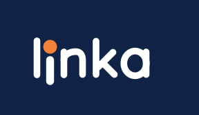

Abrir e medir
Quase nenhuma decisão antes do teste. A experiência começa direto no que importa.
Speedtest · Apple-first
O Linka é um speedtest minimalista, rápido, preciso e visualmente refinado. Ele existe para medir a qualidade da conexão e apresentar o resultado de forma imediata, clara e bonita.

O produto
O Linka não é uma central de ferramentas de rede, um app de diagnóstico ou um substituto do SignallQ. É um medidor. E justamente por ter um propósito pequeno, precisa executá-lo excepcionalmente bem.
A complexidade fica por baixo da interface. O usuário abre, o teste começa, os números aparecem e o resultado termina de se formar sem exigir uma árvore de decisões.
Quase nenhuma decisão antes do teste. A experiência começa direto no que importa.
Amostras, latência, jitter, download e upload trabalham sem poluir a interface.
O número é o protagonista visual. Detalhes existem, mas entram em segundo plano.
Pensado para pertencer ao iPhone, iPad e Mac, não apenas funcionar neles.
A aparência premium do Linka vem de tipografia, espaço, proporção, movimento e hierarquia. Sem velocímetro carnavalesco, dashboard lotado ou efeitos que brigam com o resultado.
O Linka mostra uma escolha deliberada de produto: nem toda solução precisa fazer tudo. Ele concentra energia em uma tarefa específica e deixa a engenharia trabalhar nos bastidores para que a experiência pareça simples.
Em construção
O Linka segue em desenvolvimento com foco no ecossistema Apple.